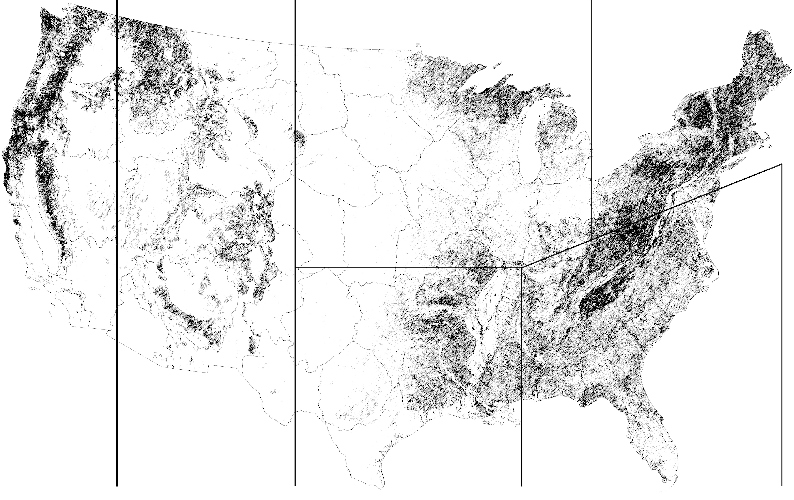

Can you hear me now?
Birds croon the tune that's heard best in their home environment.
| Pacific | Rockies | Midwest | Southwest | Northeast | Southeast | ||
|---|---|---|---|---|---|---|---|
| American crow | ► | ► | ► | ► | ► | ► | |
| Mourning dove | ► | ► | ► | ► | ► | ► | |
| Bald eagle | ► | ► | ► | ► | ► | ► | |
| American goldfinch | ► | ► | ► | ► | ► | ► | |
| American robin | ► | ► | ► | ► | ► | ► | |
| Song sparrow | ► | ► | ► | ► | ► | ► |
A robin on a fencepost in Oregon sounds slightly different than its cousin in New York. Birds sing as a primary means to find a mate and to protect their territory. So it is no surprise they're skilled revisers when it comes to figuring out which pitch transmits best in their home environment. After all, when sex and survival are on the line, you want to make sure your voice is heard.
Clinton Francis, a professor at California Polytechnic State University’s Biological Sciences Department, studies how birds vary their songs. He says the “acoustic adaptation hypothesis” explains how animals who use vocalizations over long distances, like birds and frogs, alter their calls to maximize reproductive success. In other words, they sing the song that potential mates can hear best.
Birds compete with environmental noises like wind, running water and human traffic for open bandwidth in the airwaves. So they must adjust their calls to be heard. For example, in an area with heavy car traffic (a low frequency noise) you might expect birds to sing with higher pitch. But if you’re in, say, the southern United States where cicada choruses take up high pitch bandwidth, you could expect birds to drop down an octave.
Francis says in addition to human racket, another likely factor affecting song pitch is vegetation density. Low pitch, or low frequency, sounds travel much better through dense trees and plants than do high pitch sounds. High sounds tend to scatter when they hit tree leaves or needles and end up going unheard.
On the U.S. map above, the darker areas indicate denser, taller and more robust tree coverage – illustrating that the most densely forested regions of the United States exist in the East. “In deciduous forests of the East,” says Francis, “some species may have lower-pitched vocalizations compared to those in the more open spaces of the West.”
Take a listen for yourself.